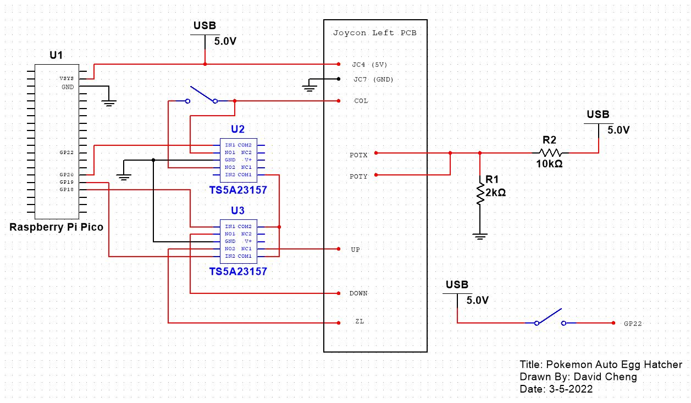

Overview
I built a circuit to automate egg hatching in Pokemon Brilliant Diamond and Shining Pearl (BDSP).
A Raspberry Pi Pico controls SPDT switches that connect button test points on a Nintendo Switch Joy-Con.
Those connections let the program simulate button presses.
Demo
This demo shows the circuit pressing buttons automatically.
Context
The program moves the player up and down the map and repeatedly presses ZL to advance
through the hatching animation. I load the party with eggs, then let the circuit
handle the repeated inputs.
Implementation
-
Pairing the Joy-Con
I soldered wires to the Joy-Con connector's 5V and GND pins so I could power it through the breadboard. Each time I turn on USB power, I press the upper pushbutton to pair the Joy-Con with the Switch.
A separate left Joy-Con lets me control the player when the circuit is off. That controller can't be used while the automated circuit is on. -
Connecting to the Joy-Con

Left Joy-Con circuit board, front

Left Joy-Con circuit board, back
I used the left Joy-Con pinout from dekuNukem's repository to find the button connections. Connecting COL to UP, DOWN, or ZL simulates that button press. I soldered wires to these test points to connect them to the breadboard.
During testing, the joystick caused unwanted player movement. I traced its inputs to POTX and POTY and applied about 0.8V to each so the controller would read the joystick as centered.
The wire colors are red for 5V, gray for GND, blue for UP, yellow for DOWN, white for ZL, orange for COL, and brown for POTX and POTY. -
Circuit

Circuit

Left Joy-Con connected to the circuit
The Pico's GPIO pins control two SPDT switches: one for COL and one for UP, DOWN, and ZL. Switching these connections simulates the button presses.
A voltage divider supplies about 0.8V to the joystick inputs. A separate pushbutton starts and stops the program.

Wiring diagram
Code
The code is in my GitHub repository.